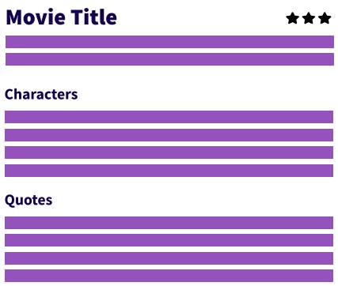

خلاصه
شما در حال ایجاد وب سایت بررسی طرفداران برای ارباب حلقه ها هستید
و نیاز به جزئیات فیلم برای انجام این کار دارید.
سایت مربوط به API در پروژه قید شده به سایت مورد نظر وارد شوید و اطلاعات API را بررسی کنید.
در این پروژه نیاز به گرفتن اطلاعات در مورد فیلم ها دارید.
کاستوم هوک شما باید به گونه ای نوشته شود که بتوان اطلاعات کلیه ی فیلم ها را دریافت کرد و سپس زمانی
که روی عنوان هر فیلم کلیک شد جزئیات بیشتری از فیلم در صفحه ی بعد نمایش داده شود.
مرحله ی ۱
یک فایل برای کاستوم هوک ایجاد کنید.
میتوانید از مکانیزم های دلخواه خود برای واکشی اطلاعات استفاده کنید.
پیشنهاد من Axios
میباشد.
مرحله ی ۲
زمانی که با یک API کار میکنید بهتر است دید کلی نسبت به
چرخه ی عمر یک request داشته باشید.
بنابراین توصیه میکنیم مراحل loading, success و error
را در هوک سفارشی در نظر بگیرید شما میتوانید از استیت ها استفاده کنید.
هوک سفارشی شما باید قابلیت واکشی این اطلاعات را زمان استفاده بدهد.
توجه کنید که واکشی فیلم ها از طریق این API
نیاز به گرفتن دسترسی دارد بررسی کنید چگونه این کار ممکن است.
داکیومنت API را مطالعه کنید. پاسخ انجاست.
مرحله ی ۳
لیست نظرات هر فیلم و کاراکتر ها در صفحه ی جزئیات فیلم نمایش داده شود.
در صفحه ی جزئیات برای یک عمل پیشرفته تر انتظار داریم شما خودتان در صفحه ی جزئیات بتوانید به هر فیلم
یک امتیاز دهید.
برای ذخیره ی امتیازات باید یک API بسازید.
دقت کنید ما نمیخواهیم شما با یک زبان برنامه نویسی اینکار را انجام دهید.
درباره ی JSON-Server تحقیق کنید و از ان برای پیاده سازی API و استفاده از ان بهره ببرید.
شمای پروژه
